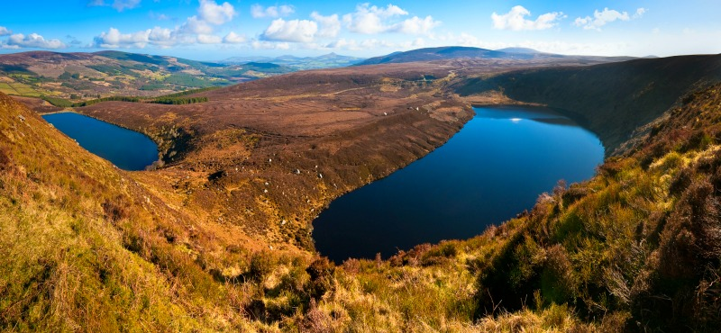
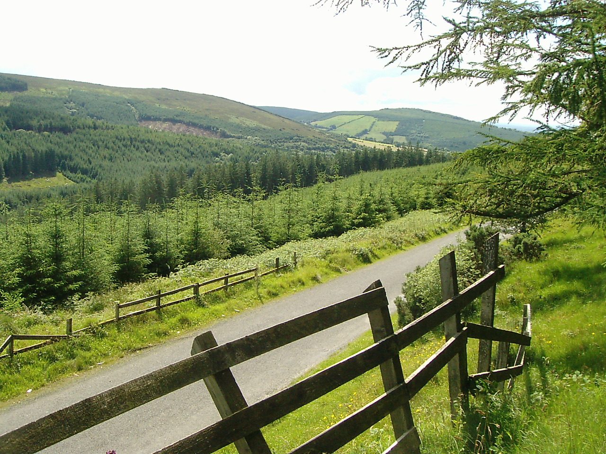
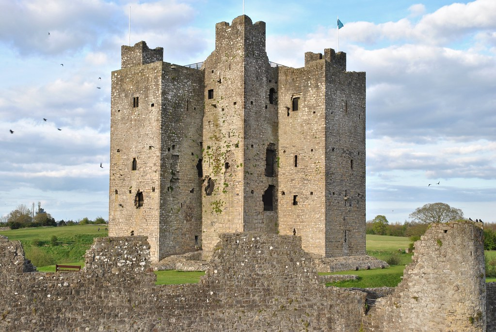

Provincia del Leinster
Indice:
Provincia del Leinster
Il Leinster è una delle quattro province
della Repubblica d'Irlanda. È situata nella parte orientale dell'isola d'Irlanda e comprende la capitale del paese, Dublino. È la provincia più
popolata di tutta l'isola.
La prima parte del nome Leinster deriva da Laigin, il nome di una tribù che un tempo abitava la zona. La seconda
parte deriva dall'irlandese o dall'antico norreno, entrambi i quali si traducono in "terra" o "territorio".
Per saperne di più, visita la pagina Leinster.
Le contee del Leinster sono undici: Carlow, Dublino, Kildare, Kilkenny, Laois, Longford, Louth, Meath, Offaly, Westmeath, Wexford e Wicklow.
Qui tratteremo quelle più rilevanti per i racconti mostrati all'interno del sito:
Contea di Dublino

Dublino Dublino (in irlandese Contae Bhaile Átha Cliath) è una delle trentadue contee tradizionali dell'Irlanda. Al suo interno,
come suggerisce il nome, è situata la capitale irlandese Dublino. Dal 1994 la provincia ha soltanto valenza culturale (per attività sportive e tradizionali) poiché è stata divisa in tre contee
amministrative moderne: Dún Laoghaire-Rathdown, Fingal e South Dublin, nonché la città di Dublino che è amministrata
autonomamente. Si parla recentemente di Dublin Region (Réigiúin Átha Cliath) per identificare il territorio della vecchia contea. Lo stemma della contea di Dublino è formato da uno scudo giallo o ocra nel quale è ben evidente un corvo su una
staccionata. Il corvo era un simbolo ricorrente fra le popolazioni vichinghe, che per prime fondarono un insediamento
nel luogo, mentre la staccionata richiama il nome gaelico del luogo ("guado dei graticci"). Il corvo è stato ripreso
nello stemma della contea di Fingal.
Tra i luoghi rilevanti per noi possiamo citare: Dublino, Castleknock, Glanismole e Gowra.
Thomas Connolly e la Banshee Oisin e Niamh Una battaglia tra clan
In questo luogo compaiono:
Fianna Lia Finn Niamh Oisin Oscar
Contea di Laois

Laois (talvolta scritto anche Laoighis e Leix) è una contea
della Repubblica d'Irlanda, situata nella provincia del Leinster,
nelle midlands dell'isola.
Il territorio è pressoché pianeggiante o poco collinare ed attraversato da due fiumi di discreta importanza, eccetto per
la catena montuosa delle Slieve Bloom, importanti in passato strategicamente e visitate oggi da naturalisti e turisti
per i paesaggi incontaminati e rilassanti.
Il Laois è l'unica contea d'Irlanda ad essere doppiamente senza sbocco sul mare, ovvero a non avere nessun tratto di
costa e a confinare con altra contea affacciata sul mare. Il Laois ha avuto da sempre un particolare rapporto con i
dominatori britannici. Fu creata infatti nel 1556 da Maria I
d'Inghilterra, col nome di Queen's county: è stato soltanto dopo la Guerra d'indipendenza irlandese che ricevette
l'attuale ma antico nome in gaelico: stessa sorte capitò a Portlaoise, county town e centro maggiore, che prima si
chiamava Maryborough.
Contea di Meath

Meath è una delle trentadue contee dell'Irlanda tradizionali. Vicinissima
alla capitale Dublino, confina in senso orario ad est con il Mare d'Irlanda, a sud-est con la contea di Fingal, a sud
con le contee di Kildare ed Offaly, ad ovest con quella di Westmeath, a nord-ovest con le due contee della Repubblica
nell'Ulster, Cavan e Monaghan, e a nord-est infine con la piccola contea di Louth. Fa parte della provincia del
Leinster, anche se anticamente formava gran parte di una provincia autonoma più piccola delle altre che portava lo
stesso nome della contea attuale.
Viene informalmente chiamata the Royal county, perché al suo interno è situata l'antica Collina Reale di Tara, sede
dell'High King of Ireland. Il Meath è forse la contea più impregnata di connotati storici e tradizionali della sua
nazione, per la presenza di siti archeologici straordinari come Newgrange e Tara.
Meath, viene dal gaelico irlandese An Mhí, che significa "il centro". Era infatti, a suo tempo, la provincia centrale
dell'Irlanda. Il Meath è una contea quasi totalmente contraddistinta di vasti paesaggi collinari, che raggiungono una certa elevazione
soltanto nelle parti occidentali, senza tuttavia perdere le caratteristiche di campagna e di territorio piuttosto dolce. Il fiume principale è il Boyne, che entra nel Meath nella sua estremità sud-occidentale e, scorrendo verso nord-est e
Drogheda, lo divide in due parti abbastanza uguali in dimensioni.
Tra i luoghi rilevanti per noi, possiamo citare: Tara, Teltown, il Boyne e le Loughcrew Cairns.
Milesi-Introduzione Il giudizio di Amergin La sconfitta dei Tuátha dé Danaan La nascita di Cú Chulainn
In questo luogo compaiono:
Miled Amergin Tuátha dé Danaan Dagda Setanta Angus